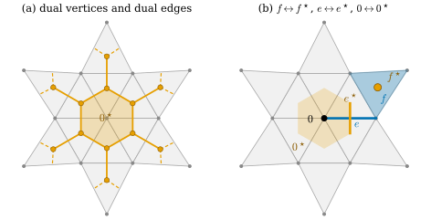
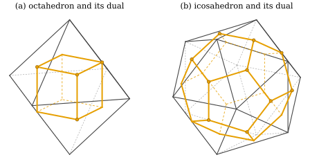

33.6 The Dual Complex and Poincaré Duality
Goals
- 닫힌 simplicial surface의 \(k\)-simplex마다 \((2-k)\)차원 dual cell을 대응시켜 dual complex를 만들 수 있다.
- dual의 개수 \(n_k^\star = n_{2-k}\)와 \(\chi\)가 같음, dual이 trivalent인 polygon complex임을 증명할 수 있다.
- dual의 incidence matrix가 primal incidence matrix의 transpose임을 증명하고, 이 \(k \leftrightarrow 2-k\) 대응이 Poincaré duality라는 이름으로 불린다는 것을 설명할 수 있다.
Prerequisites
- Definition 33.4.2, Corollary 33.4.5: simplicial surface, edge마다 triangle 둘, vertex 둘레의 fan
- Definition 33.5.1: incidence matrix, Definition 33.5.10, Proposition 33.5.14: halfedge mesh
- Proposition 33.4.23: \(\sum_i(6 - \deg i) = 6\chi\)
Motivation
Exercise 33.5.3에서 \(A_1A_1^{\mathsf T} - 3I\)가 “edge를 공유하는 triangle 쌍”의 graph라는 것을 보았다. Proposition 33.3.18의 orientation propagation은 바로 이 graph를 따라 triangle에서 triangle로 건너갔다. 이 graph에서는 triangle이 점이 되고 edge가 선이 된다. 그렇다면 vertex는 무엇이 될까? vertex 둘레의 triangle들은 한 바퀴를 이루므로(Corollary 33.4.5), 그 바퀴가 둘러싸는 polygon이 자연스러운 답이다.
이렇게 dimension을 뒤집은 짝, 곧 \(k\)-simplex마다 \((2 - k)\)차원 조각을 하나씩 두는 대상을 dual complex라 한다. smooth 세계에서 \(k\)-form과 \((n-k)\)-form을 짝짓는 Hodge star(Chapter 34)가 discrete 세계에서 이 짝 위에 놓인다. 이 절은 조합적인 dual만 정의한다. dual vertex를 공간의 어디에 두는지, 곧 dual의 기하는 Section 36.5의 주제다.
Intuition: Turning Dimensions Around

Figure 33.6.1의 (b)를 보면 세 쌍이 한눈에 들어온다. 2차원인 triangle \(f\)는 0차원인 점 \(f^\star\)가 되고, 1차원인 edge \(e\)는 그것을 가로지르는 1차원 dual edge \(e^\star\)가 되며, 0차원인 vertex 0은 2차원 polygon \(0^\star\)가 된다. (a)에서 주황 선만 따라가 보자. 주황 점마다 선이 셋씩 나가므로 dual은 모든 vertex의 degree가 3인 graph를 품고, 그 graph가 vertex 0을 육각형으로 감싼다. 바깥쪽에는 닫히지 않은 조각만 있다. 이 patch에는 boundary가 있기 때문이다. 아래 정의는 boundary가 없는 surface에서 한다.
Dual Cells and the Dual Complex
이 절에서 \(\mathcal{K}\)는 boundary가 없는 simplicial surface다. Corollary 33.4.5에 의해 모든 edge는 triangle 정확히 둘에 속하고, 모든 vertex \(i\)의 link는 cycle \(j_1, \dots, j_m\)이다(\(m = \deg i\)). 이때 \(i\)를 포함하는 triangle은 \(t_r = \{i, j_r, j_{r+1}\}\) (\(r = 1, \dots, m\), \(j_{m+1} = j_1\))이고, 이웃한 \(t_r\)과 \(t_{r+1}\)은 edge \(\{i, j_{r+1}\}\)을 공유한다(Proposition 33.2.14).
Definition 33.6.1 (dual cell). \(\mathcal{K}\)의 simplex \(\sigma\)마다 다음과 같이 정한 \(\sigma^\star\)를 \(\sigma\)의 dual cell(쌍대 세포)이라 한다.
- triangle \(f\): 점 하나 \(f^\star\)(dual vertex).
- edge \(e\): \(e\)를 포함하는 두 triangle을 \(f, g\)라 할 때, 양 끝이 \(f^\star\)와 \(g^\star\)인 선분 \(e^\star\)(dual edge).
- vertex \(i\): vertex가 차례로 \(t_1^\star, t_2^\star, \dots, t_m^\star\)이고 변이 \(\{i, j_2\}^\star, \{i, j_3\}^\star, \dots, \{i, j_{m+1}\}^\star\)인 \(m\)각형 \(i^\star\)(dual face).
\(k\)-simplex의 dual cell은 \((2-k)\)차원이다.
dual face의 정의에서 \(t_r^\star\)와 \(t_{r+1}^\star\)를 잇는 변이 \(\{i, j_{r+1}\}^\star\)인 것은, 그 edge가 바로 두 triangle의 공유 edge이기 때문이다. link의 cycle을 어디서 시작하든, 어느 방향으로 돌든 같은 polygon이다.
Definition 33.6.2 (dual complex). dual cell 전체의 모임 \(\mathcal{K}^\star = \{\sigma^\star : \sigma \in \mathcal{K}\}\)에, “\(\sigma\)가 \(\tau\)의 face일 때 \(\tau^\star\)를 \(\sigma^\star\)의 face(vertex나 edge)로 본다”는 incidence를 준 것을 \(\mathcal{K}\)의 dual complex(쌍대 복합체)라 한다. polygon \(i^\star\)들을 공유하는 변 \(e^\star\)를 따라 붙인 것으로 그린다.
incidence가 정의의 셋째 줄과 맞는지 확인하자. \(f^\star\)가 \(i^\star\)의 vertex인 것은 \(f\)가 \(i\)를 포함하는 것, 곧 \(i\)가 \(f\)의 face인 것이다. \(e^\star\)가 \(i^\star\)의 변인 것은 \(i \in e\)인 것이다(link의 모든 vertex \(j\)가 cycle에 나오므로 \(i\)를 포함하는 모든 edge \(\{i, j\}\)가 변으로 나온다). 포함 관계가 뒤집힌다는 것이 dual의 본질이다. dual은 일반적으로 simplicial complex가 아니라, polygon을 붙인 polygonal cell complex(다각형 세포복합체)다.
Example 33.6.3 (Platonic duals and the torus).
(a) tetrahedron의 boundary: vertex의 valence가 3이므로 dual face는 모두 triangle이고, dual vertex 4개, dual edge 6개, dual face 4개다. dual이 다시 tetrahedron이다(self-dual). (b) 정팔면체: valence 4이므로 dual face는 사각형 6개, dual vertex는 triangle 수인 8개, dual edge 12개로 정육면체의 조합이다. (c) 정이십면체: valence 5이므로 dual face는 오각형 12개, dual vertex 20개, dual edge 30개로 정십이면체의 조합이다. (d) torus_mesh(2, 0.8, nu, nv): 모든 valence가 6이므로 dual face는 모두 육각형이고 벌집 모양이다.
Verification: verify/v-33-6-dual-complex.py
Non-example 33.6.4. (a) 정팔면체의 dual은 face가 사각형이라 simplicial complex가 아니다. dual은 정의상 polygon complex다. (b) vertex 하나에서 두 fan이 만나는 “나비”(Non-example 33.4.7(b))에서는 그 vertex 둘레의 triangle이 한 바퀴가 아니라 두 바퀴를 이루어, dual face 하나를 정할 수 없다. 정의가 simplicial surface를 요구하는 이유다. (c) boundary가 있는 surface에서는 boundary edge의 dual edge가 한쪽 끝만 갖고, boundary vertex 둘레의 triangle은 한 바퀴를 닫지 못하고 줄을 이루어 dual face가 닫히지 않는다(Figure 33.6.1(a)의 점선). 이런 잘린 dual cell은 boundary condition과 함께 Chapter 36과 Chapter 42에서 다룬다.

lib/ch33.py)와 그 dual complex, (b) 정이십면체(dgmesh.icosphere(0))와 그 dual complex. dual vertex는 각 triangle의 무게중심에 그렸다(그림을 위한 선택). 읽는 법: 회색 선이 primal edge, 주황 선과 점이 dual edge와 dual vertex다. 뒤쪽 반의 선은 점선이다. 볼 것: (a)의 dual vertex는 \((\pm1, \pm1, \pm1)/3\)의 8개 점이고 dual edge 12개의 길이가 모두 같아, dual은 정육면체가 된다. dual face는 정팔면체의 vertex 하나를 둘러싼 사각형이다. (b)의 dual face는 vertex 하나를 둘러싼 오각형이고 dual은 정십이면체다. 두 경우 모두 모든 주황 점에서 주황 선이 셋씩 나간다. 본문과의 연결: Example 33.6.3, Proposition 33.6.5. (a)를 한 dimension씩 만들어 가는 판은 Animation 33.6.1이다. 돌려 볼 수 있는 interactive version이 있다.Figure 33.6.2의 (a)에서 정팔면체의 꼭대기 vertex를 보자. 그 둘레의 triangle 넷의 무게중심이 주황 사각형 하나, 곧 그 vertex의 dual face를 이룬다. 정팔면체의 vertex가 6개이므로 사각형도 6개이고, 이것이 정육면체의 여섯 face다. (b)에서는 vertex마다 triangle 다섯이 모이므로 dual face가 오각형이다. 그림은 무게중심에 점을 찍었지만, 이 절에서 중요한 것은 위치를 지워도 남는 조합적 대응이다.
Animation 33.6.1은 (a)의 dual을 dimension 하나씩 만든다. 먼저 face 8개가 dual vertex 8개가 되고, 다음에 edge 12개마다 그 edge를 가로지르는 dual edge가 생기며, 마지막에 vertex 6개를 둘러싼 dual face가 칠해진다. 오른쪽 표에서 수가 \(8 \to 8\), \(12 \to 12\), \(6 \to 6\)으로 dimension만 바뀌어 옮겨 가는 것을 보자. 끝에서는 dual vertex를 바깥으로 밀어 정팔면체를 지운다. 사각형 dual face 여섯이 정육면체의 face가 되고, 두 \(\chi\)가 같은 \(2\)로 남는다.
lib/ch33.py의 정팔면체(vertex \(\pm e_1, \pm e_2, \pm e_3\), face는 바깥쪽)와 그 dual complex. dual vertex는 face의 무게중심 \((\pm1, \pm1, \pm1)/3\)에, dual edge는 무게중심에서 primal edge의 중점을 거쳐 이웃 무게중심으로 가는 polygonal path로(surface 위에서 primal edge를 가로지르게) 그렸다. 끝에서는 dual vertex를 \((\pm1, \pm1, \pm1)\)까지 바깥으로 민다. 정사영이고, 카메라는 \(z\)축 둘레로 약 \(40^\circ\) 천천히 돈다.
읽는 법: 회색 face와 검은 edge, vertex가 정팔면체이고, 주황 점, 선, 칠한 영역이 dual vertex, dual edge, dual face다. 뒤쪽에 있는 것은 옅게 그렸다. 오른쪽 표는 primal의 \(k\)-simplex와 그것에 대응하는 \((2-k)\)차원 dual cell의 수다.
볼 것: 주황 점마다 주황 선이 셋씩 나가고(trivalent), 각 dual face는 primal vertex 하나를 둘러싼 사각형이다(\(\deg = 4\)). 표는 \((n_0, n_1, n_2) = (6, 12, 8)\)이 \((n_2^\star, n_1^\star, n_0^\star)\)로 옮겨 감을 보여 주고, 끝의 정육면체는 vertex 8, edge 12, face 6이다. \(\chi = 6 - 12 + 8 = 2\)와 \(\chi^\star = 8 - 12 + 6 = 2\)가 같다.
본문과의 연결: Definition 33.6.1, Definition 33.6.2, Example 33.6.3, Proposition 33.6.5(a), (b). 정지 그림은 Figure 33.6.2(a)다.
시간: 0–1.5초 정팔면체, 1.5–4.7초 dual vertex, 4.7–8.2초 dual edge, 8.2–11.7초 dual face, 11.7–16.2초 dual을 바깥으로 밀어 정육면체로, 16.2–21.4초 \(\chi\).Proposition 33.6.5 (counts, trivalence, and \(\chi\)). boundary가 없는 simplicial surface \(\mathcal{K}\)의 dual에서 \(n_k^\star\)를 \(k\)차원 dual cell의 수라 하면
- (a) \(n_0^\star = n_2\), \(n_1^\star = n_1\), \(n_2^\star = n_0\)이고, 따라서 \(n_0^\star - n_1^\star + n_2^\star = \chi\)이다.
- (b) 모든 dual vertex는 dual edge 정확히 셋의 끝점이고(trivalent), dual face \(i^\star\)는 \(\deg i\)각형이며, 모든 dual edge는 dual face 정확히 둘(\(e = \{i,j\}\)이면 \(i^\star\)와 \(j^\star\))의 변이다.
- (c) \(\mathcal{K}\)가 consistently oriented이고 \((H, \eta, \rho)\)가 그 halfedge mesh(Example 33.5.12)이면, \((H, \eta, \rho\circ\eta)\)도 halfedge mesh이고 그 face, edge, vertex가 정확히 \(\mathcal{K}^\star\)의 dual face, dual edge, dual vertex다. 따라서 dual은 boundary가 없는 oriented surface다.
Proof. (a) \(\sigma \mapsto \sigma^\star\)는 \(k\)-simplex와 \((2-k)\)차원 dual cell 사이의 일대일 대응이다. 그러므로 \(n_0^\star - n_1^\star + n_2^\star = n_2 - n_1 + n_0 = \chi\)이다. (b) dual vertex \(f^\star\)를 끝점으로 갖는 dual edge는 \(e \subseteq f\)인 \(e^\star\)이고 triangle의 edge는 셋이다. \(i^\star\)의 변은 link cycle의 길이 \(m = \deg i\)개다. \(e^\star\)를 변으로 갖는 dual face는 \(i \in e\)인 \(i^\star\), 곧 \(e\)의 두 끝점의 것이다. (c) \(\eta\)는 그대로 fixed point 없는 involution이고 \(\rho\circ\eta\)는 permutation이다. 새 halfedge mesh의 face는 \(\rho\circ\eta\)의 orbit, 곧 Proposition 33.5.13(e)에 의해 \(\mathcal{K}\)의 vertex이고, 그 orbit의 순서는 link cycle의 순서다. vertex는 \((\rho\circ\eta)\circ\eta = \rho\)의 orbit, 곧 \(\mathcal{K}\)의 triangle이다. 새 구조에서 halfedge \(h\)의 tail은 \(h\)가 속한 \(\rho\)-orbit, 곧 primal triangle \(\operatorname{face}(h)\)이다. edge는 \(\eta\)의 orbit으로 같다. incidence도 Definition 33.6.1과 같다. \(h = i \to j\)는 새 face \(i^\star\)의 변이고, 그 tail은 \(\operatorname{face}(h)\), head(새 next의 tail)는 \(\rho(\eta(h))\)가 속한 triangle, 곧 \(\operatorname{face}(\eta(h))\)이다. 그러므로 이 변은 \(\{i, j\}\)를 공유하는 두 triangle의 dual vertex를 잇는 \(\{i, j\}^\star\)이고, \(i^\star\)의 변은 link cycle의 순서로 이어진다. 마지막 주장은 Proposition 33.5.14에 기대므로 그 명제처럼 topology의 부분은 스케치다. 그 명제에 의해 dual은 boundary가 없는 oriented surface이고, 그 \(\chi\)는 (a)의 수다.
(c)는 halfedge의 언어로 dual을 얻는 가장 짧은 길이다. halfedge는 그대로 두고 next만 \(\rho\)에서 \(\rho\circ\eta\)로 바꾸면 primal과 dual이 자리를 바꾼다. 이렇게 얻은 dual face \(i^\star\)는 \(\rho\circ\eta\)의 방향, 곧 primal의 normal 쪽에서 보아 \(i\) 둘레를 시계 방향으로 돈다(Section 33.5의 Conventions 상자). dual cell의 orientation 규약은 이것과 따로 Section 36.5에서 정한다. Section 33.5의 quad-edge 구조가 primal과 dual을 함께 저장하는 것도 같은 생각이다.
Proposition 33.6.6 (the dual incidence matrices are transposes). dual cell을 그 primal simplex의 번호로 부르고(\(f^\star\)는 \(f\)의 번호, \(e^\star\)는 \(e\)의 번호, \(i^\star\)는 \(i\)의 번호), dual의 incidence matrix를 \(A_0^\star \in \{0,1\}^{n_1^\star \times n_0^\star}\)(dual edge × dual vertex), \(A_1^\star \in \{0,1\}^{n_2^\star \times n_1^\star}\)(dual face × dual edge)로 정의하면
이다.
Proof. \((A_0^\star)_{ef} = 1\)일 필요충분조건은 \(f^\star\)가 \(e^\star\)의 끝점인 것이고, 정의에 의해 이것은 \(e \subseteq f\), 곧 \((A_1)_{fe} = 1\)이다. \((A_1^\star)_{ie} = 1\)일 필요충분조건은 \(e^\star\)가 \(i^\star\)의 변인 것이고, 위의 확인에 의해 이것은 \(i \in e\), 곧 \((A_0)_{ei} = 1\)이다.
dual의 정보는 새로 저장할 필요가 없다. primal의 incidence matrix의 transpose를 읽으면 된다. 부호까지 붙인 판, 곧 \(A_0^{\pm}\)와 \(A_1^{\pm}\)의 transpose가 dual의 signed incidence matrix가 되려면 dual cell에도 orientation을 정해야 한다. 그 규약(primal edge를 \(+90^\circ\) 돌린 방향 등)과 부호는 Section 36.5에서 정한다.
Remark 33.6.7 (dualizing twice). Proposition 33.6.5(c)의 halfedge 판에서 dual을 한 번 더 취하면 next가 \((\rho\circ\eta)\circ\eta = \rho\)로 돌아온다. incidence matrix로는 (33.6.1)을 두 번 쓰면 \((A_1^{\mathsf T})^{\mathsf T} = A_1\)이다. 곧 dual의 dual은 조합적으로 원래 complex다. dual이 simplicial complex가 아니므로 이 문장은 polygon complex의 dual로 정의를 넓혀야 정확해지지만, 이 장에서는 halfedge 판으로 충분하다.
Poincaré duality
\(n\)차원 manifold에서 \(k\)차원 조각과 \((n-k)\)차원 조각을 이렇게 짝짓는 대응을 흔히 Poincaré duality(푸앵카레 쌍대성)라 부르고, 강의 슬라이드도 dual complex를 “Poincaré dual”이라 부른다 [CMU-DDG L2B]. 이름은 닫힌 orientable manifold에서 \(k\)차원 “구멍”과 \((n-k)\)차원 “구멍”의 개수가 같다는 정리(Poincaré duality theorem)에서 왔고, 이 정리의 고전적인 증명 하나가 이런 dual cell 분할을 쓴다. 그 정확한 진술에는 homology나 cohomology가 필요하므로 이 장의 범위 밖이다(Section 19.5, [Hatcher02]). 이 장에서는 \(k \leftrightarrow 2-k\) 대응과 (33.6.1)의 transpose 관계를 이 이름으로 부르는 데서 멈춘다. Example 33.4.11의 3-manifold에서는 같은 구성이 tetrahedron ↔ dual vertex, triangle ↔ dual edge, edge ↔ dual polygon, vertex ↔ dual polyhedron을 준다.
Summary
- boundary가 없는 simplicial surface에서 triangle은 dual vertex, edge는 두 triangle을 잇는 dual edge, vertex는 둘레 triangle들을 link 순서로 이은 dual face가 된다. 포함 관계가 뒤집힌다.
- dual은 polygon complex이고 trivalent이며, dual face \(i^\star\)는 \(\deg i\)각형이다. \(n_k^\star = n_{2-k}\)이므로 \(\chi\)가 같고, halfedge로는 next를 \(\rho\)에서 \(\rho\circ\eta\)로 바꾼 것이다.
- dual의 incidence matrix는 primal의 transpose다: \(A_0^\star = A_1^{\mathsf T}\), \(A_1^\star = A_0^{\mathsf T}\). 이 \(k \leftrightarrow n-k\) 대응을 Poincaré duality라 부른다.
- 조합적 dual에는 위치가 없다. dual vertex를 어디에 두는지가 Hodge star를 정하고, 그것은 Chapter 36의 일이다.
다음 장에서는 이 장과 독립적으로, 길이·넓이·부피를 재는 언어인 exterior algebra를 세운다. \(k\)-vector와 \(k\)-form, 그리고 \(k\)차원과 \((n-k)\)차원을 짝짓는 Hodge star가 나온다. Chapter 36에서 그 언어를 이 장의 complex와 dual complex 위에 올린다.
Exercises
Exercise 33.6.1 ★
icosphere(1)(\(n_0, n_1, n_2 = 42, 120, 80\))의 dual에서 \(n_0^\star, n_1^\star, n_2^\star\)와 dual face의 모양별 개수를 구하여라.
Solution
Proposition 33.6.5(a)에서 \((n_0^\star, n_1^\star, n_2^\star) = (80, 120, 42)\)이다. dual face \(i^\star\)는 \(\deg i\)각형이고, valence 5인 vertex가 12개, 6인 vertex가 30개이므로(Example 33.4.21) 오각형 12개, 육각형 30개다. 변의 총수 \(12\cdot5 + 30\cdot6 = 240 = 2n_1^\star\)이다(dual edge마다 dual face 둘).
Verification: verify/v-33-6-dual-complex.py
Exercise 33.6.2 ★
lib/ch33.py의 triangulated cube(\(n_0, n_1, n_2 = 8, 18, 12\))의 dual에서 dual face의 모양을 구하여라. dual은 정다면체의 조합인가?
Solution
valence가 6인 vertex 2개와 4인 vertex 6개이므로(Example 33.4.21) dual face는 육각형 2개, 사각형 6개다. dual vertex 12개, dual edge 18개이고 \(12 - 18 + 8 = 2\)이다. face의 모양이 섞여 있으므로 정다면체의 조합이 아니다. 같은 정육면체라도 대각선을 긋는 방법에 따라 dual이 달라진다.
Verification: verify/v-33-6-dual-complex.py
Exercise 33.6.3 ★★ boundary가 없는 simplicial surface의 dual에서 \(\sum_{i}\,(6 - \#\text{sides of } i^\star) = 6\chi\)임을 보여라. 이로부터 sphere 모양(\(\chi = 2\))이고 dual face가 오각형과 육각형뿐이면 오각형이 정확히 12개임을 보이고, 축구공 무늬와 Exercise 33.6.1의 dual로 확인하여라.
Solution
\(i^\star\)의 변의 수는 \(\deg i\)이므로(Proposition 33.6.5(b)) 좌변은 \(\sum_i(6 - \deg i)\)이고, Proposition 33.4.23에 의해 \(6\chi\)다. 오각형이 \(p\)개, 육각형이 \(h\)개이면 좌변은 \(p\cdot1 + h\cdot0 = p\)이므로 \(p = 6\cdot2 = 12\)이다. 육각형의 수는 정해지지 않는다. 축구공(오각형 12, 육각형 20)과 Exercise 33.6.1의 dual(오각형 12, 육각형 30)이 모두 그렇다. trivalent하고 오각형과 육각형만 있는 sphere 모양의 탄소 분자(fullerene)에 오각형이 언제나 12개인 이유가 이것이다.
Verification: verify/v-33-6-dual-complex.py(icosphere의 level 0–3 dual에서 오각형 12개)
Exercise 33.6.4 ★
vertex가 \(4 \times 4\)인 dgmesh.grid_mesh(..., pattern="same")에서 dual face가 닫힌 polygon이 되는 vertex는 몇 개이고 각각 몇 각형인가? 한쪽 끝만 있는 dual edge는 몇 개인가?
Solution
닫힌 dual face는 link가 cycle인 interior vertex에만 생기므로 안쪽 \(2 \times 2 = 4\)개의 vertex다. 같은 대각선으로 나눈 grid의 interior vertex는 valence가 6이므로 모두 육각형이다(Exercise 33.2.2(c)와 같은 이유). 한쪽 끝만 있는 dual edge는 boundary edge의 dual이므로 테두리 edge \(4 \cdot 3 = 12\)개다. boundary vertex 12개의 dual cell은 닫히지 않는다(Non-example 33.6.4(c)).
Verification: verify/v-33-6-dual-complex.py
Exercise 33.6.5 ★
Coding. Implementation 상자의 dual을 dgmesh.torus_mesh(2, 0.8, 4, 6)에 적용해 dual의 개수, \(\chi\), dual face의 모양, trivalence, (33.6.1)을 확인하여라. 또 Proposition 33.6.5(c)대로 next를 \(\rho\circ\eta\)로 바꾼 halfedge mesh의 face orbit이 primal vertex와 같은지 확인하여라.
Solution
Implementation 상자의 코드를 먼저 실행한 뒤 다음을 실행한다.
V, F = dm.torus_mesh(2, 0.8, 4, 6)
dedges, dfaces, B0, B1 = dual(F)
n = (len(F), len(dedges), len(dfaces))
print(n, n[0] - n[1] + n[2], sorted({len(p) for p in dfaces}), set(B0.sum(0).tolist()))
print(np.array_equal(B0, np.abs(dd.d1(F)).T), np.array_equal(B1, np.abs(dd.d0(F)).T))
he = dd.HalfedgeMesh(F)
new_next = he.next[he.twin] # rho o eta
orbits = dd.permutation_cycles(new_next)
tails = [{int(he.vertex[h]) for h in c} for c in orbits] # the vertices the halfedges leave
print(len(orbits), all(len(t) == 1 for t in tails), len(set().union(*tails)))(48, 72, 24) 0 [6] {3}
True True
24 True 24dual은 dual vertex 48개, dual edge 72개, 육각형 24개로 \(\chi = 0\)이고 trivalent이며, incidence matrix가 primal의 transpose다. next를 \(\rho\circ\eta\)로 바꾼 halfedge mesh의 face orbit 24개는 각각 한 primal vertex에서 나가는 halfedge들이고, 24개의 vertex를 모두 한 번씩 덮는다.
Verification: verify/v-33-6-dual-complex.py(Implementation 상자와 위 코드를 차례로 실행해 출력을 비교한다)